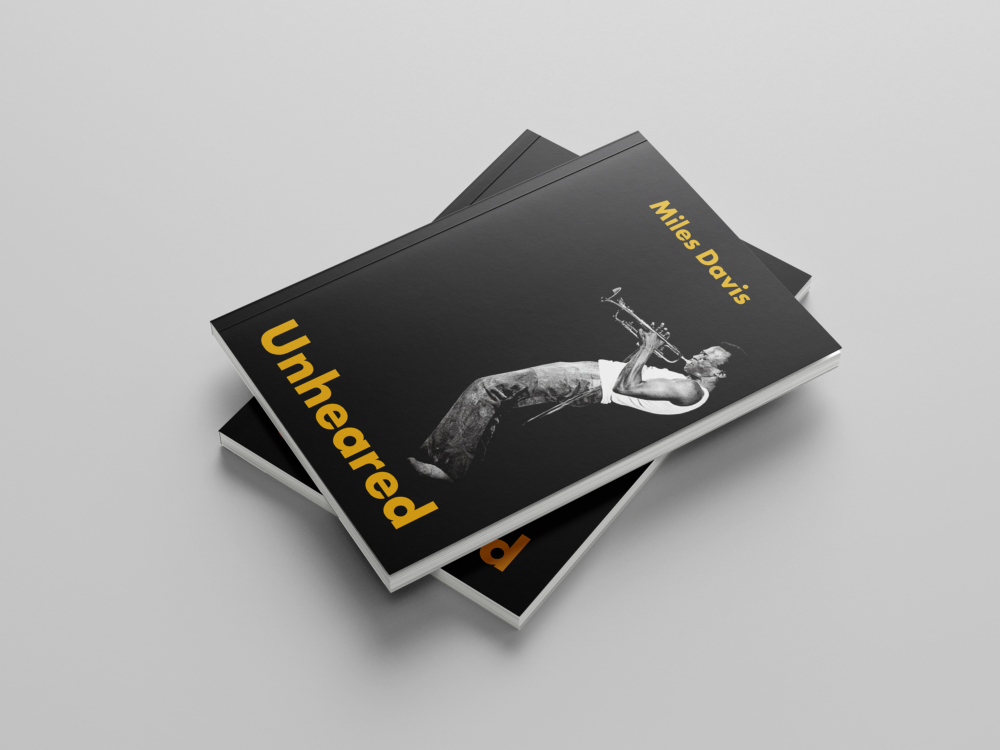
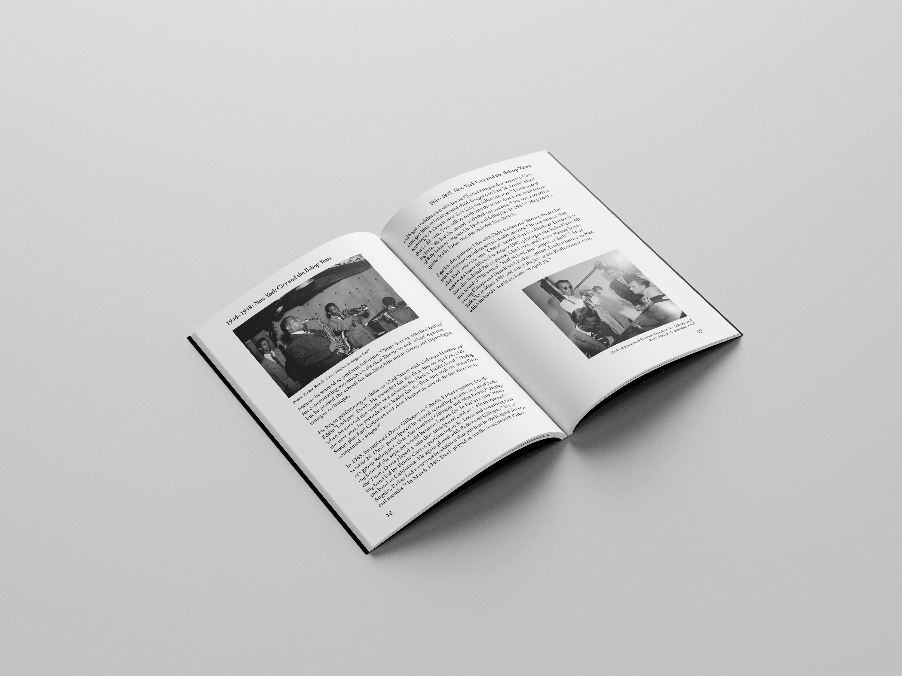
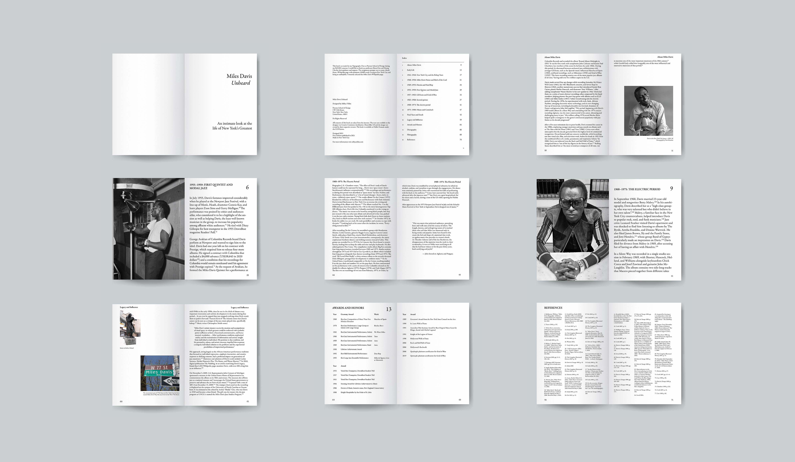
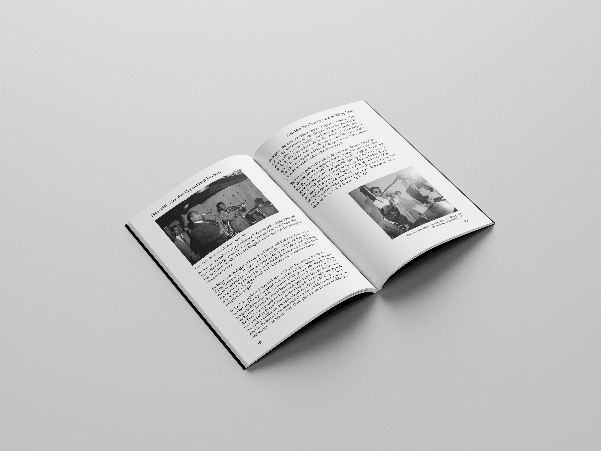
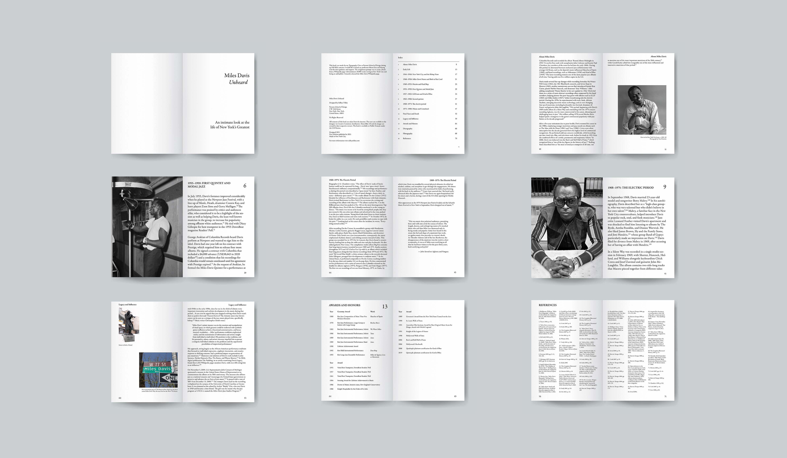

Miles Davis WikiBook
This was my final submission for my Core 1: Typography Studio during the Fall 2022 semester. The prompt was to create a book from a Wikipedia article with minimum 10,000 words and has more than 48 pages. Living in New York City and a jazz fan, I instantly selected Miles Davis' Wikipedia page.

 



Execution
The cover page uses Futura typeface and has a color scheme and image inspired by Davis' Sketches of Spain album. The typeface used in the book is Adobe Garamond and it was made on Adobe InDesign. Overall this was the most challenging project of the semester as I have never worked on such a voluminous project and never designed a book before. The book has a half-title page, full- title page, table of contents, colophon, index, and a cover.
The book has three main chapters with section dividers and uses single-column, one-column, and three-column grid. The book was printed, hand-cut, and hand-made in the Parsons Design Lab. The book has 90 pages and is perfect bound. This book consists of a cover, half-title page, full-title page, colophon, section divider, spine, and index.